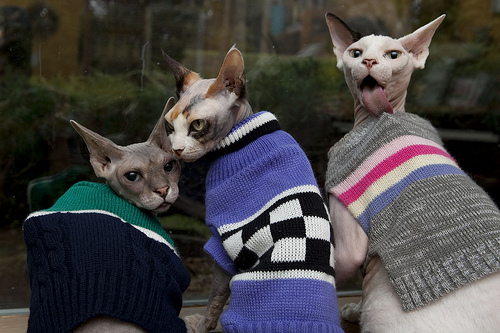

LOGO HERE

The Sphynx is a breed of cat developed through selective breeding starting in the 1960s. It is known for its lack of fur. The skin has the texture of chamois, as it has a fine layer of down. Whiskers may be present, either whole or broken, or may be totally absent. The skin is the color their fur would be, and all the usual cat marking patterns (solid, point, van, tabby, tortie, etc.) may be found on Sphynx skin.
Due to the sphynx's svelte physique, and lack of skin covering, they lie victim to the elements much easier than their furried cousins. To match their warm loving nature, they need a warm loving sweater.